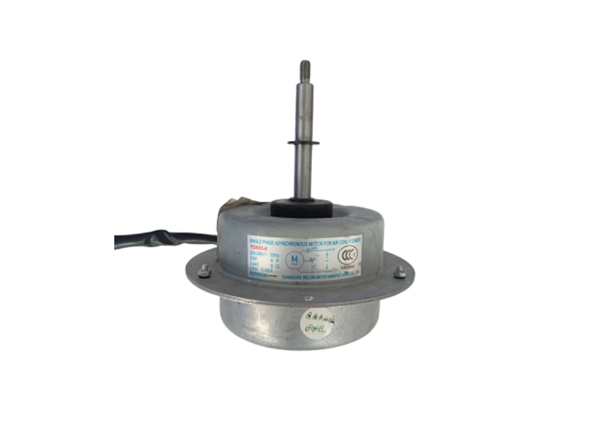

☎ 0216 344 48 19

Motor YDK53-6H 53W 0,65 A 220-240V, D=12, H=66 H1=160 FAN MOTORU - YDK53-6H 220-240V Ek özellikler H1 yükseklik, mm: 160 H yüksekliği, mm: 66 Akımı: 0,65 Güç, W: 53 Uyumluluk: Digital, Evrensel D çapı, mm: 12 Gerilim, V: 220-240 Tipi üretici: Orijinal Motor (motor) YDK53-6H 53W 0,65 A 220-240V, D=12, H=66 H1=160 dış (harici) ünitesi için klima üreticileri: AEG, Arvin, Ballu, Beko, Carrier, Changhong, Chigo, Cooper & Hunter, Daewoo, Daikin, Dantex, Dekker, Delfa, Delonghi, Dijital ( DAC-C24S ), Electrolux, Elenberg, Ergo, Eurofan, Fuji Electric, Galanz, Gorenje, Gree, Gunter & Hauer, Haier, Hitachi, Honda, Hyundai, Idea, Indesit, Kaiser, Katrina Technics, Laretti, Leberg, Lessar, LG, Lowe, Matsushito, Midea, Mitsubishi Electric, Mitsubishi Heavy, Gizem, Neoclima, Nexon, Olmo, Orion, Panasonic, Roda, Samsung, Saturn, Sencor, Sensei, Sharp, Shivaki, SmartWay, ST, Supra, Suzuki, TCL, Toshiba, Tosot, Unotherm, Vestfrost, Vitek, Whirlpool, Wildwind, Zanussi. Mili tek kesildiğini ve dişli M8. Evrensel bir model. Hizmet ve birçok marka.
| Ürün Kodu | YDK53-6H |
|---|---|
| Temin Durumu | Temin Edilebilir |
Sıfır ürünlerde üretici garantisi; revizyonlu / 2.el ünitelerde ürüne göre 6–12 ay Klimasun garantisi. Kapsam teklifte belirtilir.
Stoktaki ürünler aynı iş günü kargoya verilir; stokta olmayanlar Almanya ve İtalya'dan sipariş üzerine orijinal olarak temin edilir.
2004'ten beri endüstriyel iklimlendirmede Erdinç Klima güvencesi; F-Gaz / EKOMVET yetkinliği, kurumsal e-fatura ve teknik destek.
Bu model için yedek parça ve muadil seçenekleri için kodu bize iletin: Marka ürünleri · muadil ürünler · servis & bakım.
Evet. YDK53-6H arızalı ünitelerine bakım, kompresör değişimi, gaz şarjı ve revizyon dahil servis veriyoruz.
Stok durumuna göre sıfır, revizyonlu 2. el veya sipariş üzerine temin edilebilir. Teklif formundan sorabilirsiniz.
Uygun muadil / eşdeğer ürünler için kodu bize iletin; güncel Rittal ve MKS Clima muadilleri önerilir.